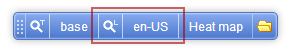
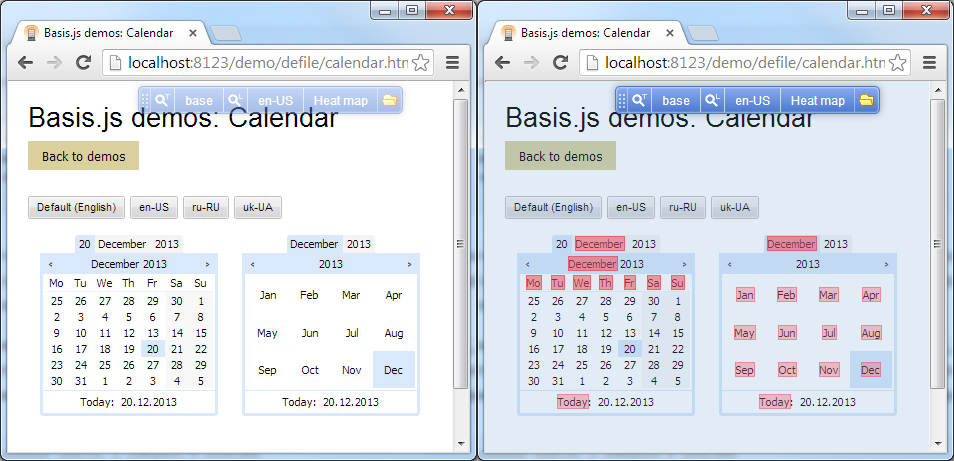
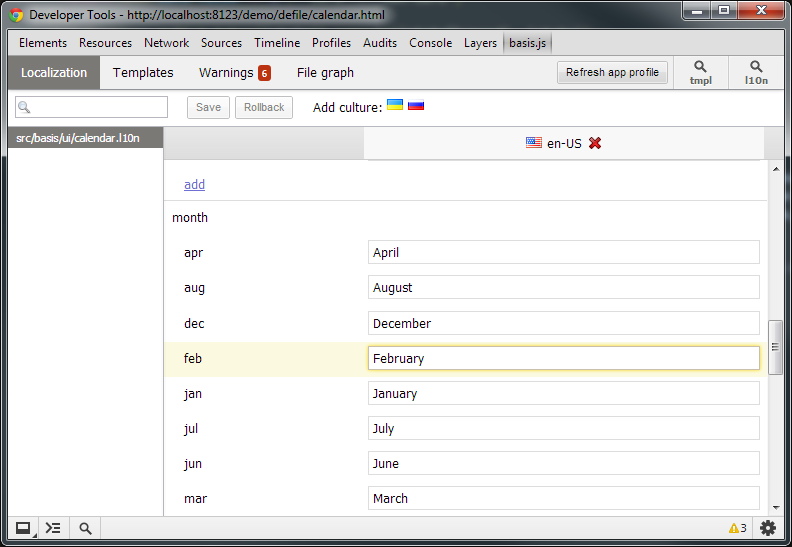

Модуль basis.l10n обеспечивает локализацию, то есть возможность использовать те или иные значения в зависимости от выбраной культуры (языка).
Этот модуль оперирует в рамках трех типов сущностей:
Локализация предоставляемая basis.l10n является полностью динамической, т.е. позволяет изменять выбранную культуру и содержимое словарей без перезагрузки страницы. В разработке могут использоваться инструменты, которые упрощают работу с локализацией.
Словарь – это интерфейс к набору значений, сгруппированых по культуре.
Содержимое словарей хранится в отдельных файлах с расширением .l10n в формате JSON. Ключи первого уровня являются кодами культуры, а значение – набор значений для словаря.
{
"en-US": {
"hello": "Hello world!"
},
"ru-RU": {
"hello": "Привет мир!"
}
}
Словари являются экземплярами класса basis.l10n.Dictionary и объявляется с помощью функции-хелпера basis.l10n.dictionary. Этой функции передается имя файла. Если для заданого имени уже существует словарь, то он возвращается, иначе создается новый.
var myDict = basis.l10n.dictionary('path/to/dict.l10n');
Если расширение файла не соотвествует .l10n, то оно заменяется на .l10n. Таким образом, можно использовать __filename (имя файла модуля), если имя файла словаря отличается от имени файла модуля только расширением.
var myDict = basis.l10n.dictionary(__filename);
Задаваемый путь к файлу разрешается относительно корня приложения. Если требуется указать путь относительно модуля, можно использовать локальную переменную __dirname.
var myDict = basis.l10n.dictionary(__dirname + 'relative/path/to/dict.l10n');
Словарь предоставляет доступ к своим ключам посредством метода token, которому передается имя токена. Если токена с заданым именем нет, то он создается. Значением токена является значение из файла словаря для текущей культуры, с учетом альтернатив.
var myDict = basis.l10n.dictionary(__filename);
console.log(myDict.token('hello').value);
// console> 'Hello world!'
basis.l10n.setCulture('ru-RU');
console.log(myDict.token('hello').value);
// console> 'Привет мир!'
console.log(myDict.token('nonexistent').value);
// console> undefined
В описании словаря поддерживается вложенность.
{
"en-US": {
"hello": "Hello world!",
"example": {
"foo": "Foo",
"bar": "Bar"
}
}
}
В таком случае именем токена является конкатенация ключей разделеных точкой (.).
var myDict = basis.l10n.dictionary('./path/to/dict.l10n');
console.log(myDict.token('example').value);
// console> { foo: "Foo", bar: "Bar" }
console.log(myDict.token('example.foo').value);
// console> 'Foo'
Описание словаря может содержать дополнительную информацию о словаре, для этого используется специальная секция _meta. Эта секция, в частности, используется для задание специальных типов для определенных ключей.
{
"_meta": {
"types": {
"example": "plural"
}
},
"en-US": {
"hello": "Hello world!",
"example": ["example", "examples"]
}
}
Культура – это некоторые языковые правила.
У каждой культуры есть свой код (обозначение). Он может быть любым, но рекомендуется придерживаться системы обозначения на основе стандарта ISO 639-1. Так код должен состоять из основной части, двухбуквенного кода языковой семьи в нижнем регистре, и опциональной второй части, двухбуквенный код географической принадлежности в верхнем регистре. Например, en-GB – британский английский, en-US – американский английский, en-CA – канадский английский и т.д.
Используемые приложением культуры объявляются функцией basis.l10n.setCultureList. А функция basis.l10n.getCultureList возвращает текущий список используемых культур. Список не может быть пустым.
basis.l10n.setCultureList('ru-RU en-US');
// альтернативный вариант
basis.l10n.setCultureList(['ru-RU', 'en-US']);
console.log(basis.l10n.getCultureList());
// console> ['ru-RU', 'en-US']
За каждой культурой в словарях закрепляются определенные значения. Если определенного значения нет для заданной культуры, то значение может быть взято из значений для другой культуры. По умолчанию, такой культурой является первая в списке заданым basis.l10n.setCultureList (считается, что первая культура наиболее полная). Для любой культуры можно задать альтернативу, при объявлении списка культур. Для этого после обозначения культуры нужно поставить / (слеш) и далее указать обозначение альтернативной культуры. Можно задать только одну альтернативу, но при этом используется альтернативная культура альтернативной культуры и далее по цепочке.
basis.l10n.setCultureList('en-US ru-RU uk-UK/ru-RU xx-XX/uk-UK');
// для ru-RU поиск будет ru-RU -> en-US
// для uk-UK: uk-UK -> ru-RU -> en-US
// для xx-XX: xx-XX -> uk-UK -> ru-RU -> en-US
Текущая культура определяет какой набор значений словаря должен использоваться. Ее код возвращает функция basis.l10n.getCulture. Текущая культура может быть изменена в любой момент, с помощью функции basis.l10n.setCulture, которой передается код культуры. Код культуры, задаваемой в качестве текущей, должен быть в списке культур, определенного функцией basis.l10n.setCultureList. При смене текущей культуры, словари обновляют свои значения согласной выбранной культуре и правилам альтернатив (это происходит без перезагрузки страницы).
basis.l10n.setCulture('ru-RU');
console.log(basis.l10n.getCulture());
// console> 'ru-RU'
С помощью функции basis.l10n.onCultureChange(fn, context, fire) можно задать функцию-обработчик на изменение текущей культуры. Эта функция принимает до трех аргументов:
this вызываемой функции;basis.l10n.onCultureChange(function(culture){
console.log('Current culture is ', culture);
});
console.log(basis.l10n.getCulture());
// console> en-US
basis.l10n.setCulture('ru-RU');
// console> Current culture is ru-RU
Культуры являются экземплярами класса basis.l10n.Culture, которые содержат языковые настройки культуры. Экземпляр культуры можно получить с помощью функции-хелпера basis.l10n.culture. Эта функция возвращает культуру ассоциированную с заданым кодом, а если таковой нет, то создает ее.
var culture = basis.l10n.culture('ru-RU');
console.log(culture);
// console> basis.l10n.Culture { name: "ru-RU", ... }
// эквивалент
var culture = new basis.l10n.Culture('ru-RU');
console.log(culture);
// console> basis.l10n.Culture { name: "ru-RU", ... }
//
console.log(basis.l10n.culture('ru-RU') === basis.l10n.culture('ru-RU'));
// console> true
Функция basis.l10n.culture расширена методами и свойствами basis.Token. Поэтому в большинстве случаев может использоваться как экземпляр basis.Token, хотя таковым не является. Например, в качестве значения для биндига (так как имеет интерфейс binding bridge).
basis.require('basis.l10n');
basis.require('basis.ui');
var view = new basis.ui.Node({
template: '<span>Current culture is {currentCulture}</span>',
binding: {
currentCulture: basis.l10n.culture
}
});
Или как альтельнатива другим функциям.
// эквивалент getCulture
console.log(basis.l10n.culture.get());
// console> en-US
console.log(basis.l10n.culture.value);
// console> en-US
// эквивалент setCulture (с версии 1.0.1)
basis.l10n.culture.set('ru-RU');
// эквивалент onCultureChange
basis.l10n.culture.attach(function(culture){
console.log('Current culture is ', culture);
});
Для удаления обработчика на смену культуры нет специальной функции. Но это можно сделать импользуя метод basis.l10n.culture.detach.
var myCultureChangeHandler = function(culture){
console.log('Current culture is ', culture);
};
// добавляем обработчик
basis.l10n.onCultureChange(myCultureChangeHandler);
basis.l10n.getCulture();
// console> en-US
basis.l10n.setCulture('ru-RU');
// console> Current culture is ru-RU
// console> undefined
basis.l10n.culture.detach(myCultureChangeHandler);
basis.l10n.setCulture('ru-RU');
// не будет сообщений в косоли
Токены являются экземплярами класса basis.l10n.Token, который унаследован от [basis.Token](basis.Token.md). Эти объекты хранят значение, которое соотвествует текущей культуре.
Получить токен можно следующими способами:
token(path);basis.l10n.token(absolutePath); функции передается ключ и путь к файлу словаря в виде одной строки, разделенные символом @;token(name); таким образом можно получить вложенные токены.{
"en-US": {
"example": {
"foo": "Foo",
"bar": "Bar"
}
}
}
var myDict = basis.l10n.dictionary('./path/to/dict.l10n');
console.log(myDict.token('example.foo'));
// console> basis.l10n.Token { name: 'example.foo', value: 'Foo' }
console.log(basis.l10n.token('example.foo@path/to/dict.l10n'));
// console> basis.l10n.Token { name: 'example.foo', value: 'Foo' }
console.log(myDict.token('example').token('foo'));
// console> basis.l10n.Token { name: 'example.foo', value: 'Foo' }
console.log(myDict.token('example.foo') === basis.l10n.token('example.foo@path/to/dict.l10n'));
// console> true
У токенов есть тип, который задается в секции _meta описания словаря. Тип токена является одинаковым для всех культур словаря.
На данный момент токены могут трех типов:
default - обычная строка, тип значения по умолчанию;plural - грамматическое число (единственное и множественное числа), значение склоняемое в зависимости от числа;markup - строка, которая которая может содержать разметку.{
"_meta": {
"types": {
"bar": "plural",
"baz": "markup"
}
},
"en-US": {
"foo": "Default",
"bar": ["bar", "bars"],
"baz": "<h1>Markup token</h1>"
}
}
var myDict = basis.l10n.dictionary('path/to/dict.l10n');
console.log(myDict.token('foo').type);
// console> 'default'
console.log(myDict.token('foo').type);
// console> 'plural'
console.log(myDict.token('foo').type);
// console> 'markup'
Значение для таких токенов задается в виде массива, где каждый элемент является формой слова в зависимости от числа. Количество форм и функция выбора формы зависит от культуры, например, в русском языке 3 формы, в английском – 2. В basis.l10n определены функции выбора формы для большинства языков.
Значения этого типа могут содержать разметку (в остальных типах разметка экранируется), но этим все не ограничивается. По сути такие значения являются описанием шаблона и поддерживают полный синтаксис шаблонов, в том числе использовать биндинги, подключать другие шаблоны, стили, а так же использовать другие словари.
{
"_meta": {
"types": {
"description": "markup",
"content": "markup"
}
},
"en-US": {
"header": "Header",
"description": "<p>Some value: {value}</p><b:include src=\"en.tmpl\"/>",
"content": "<h1>{l10n:header}</h1><div class=\"content\">{l10:description}</div>"
}
}
В данном примере два markup токена. Первый (description) использует биндинг {value}, а так же подключает содержимое из файла en.tmpl (путь к файлу разрешается относительно файла словаря). Второй (content) используется два l10n биндинга, и в этом случае значения будут браться из самого словаря (так как содержимое "шаблона" описано в словаре).
При вставке в шаблон, содержимое markup токена оборачивается в <span class="basisjs-markup"></span>.
На данный момент, сборщик basisjs-tools не поддерживает markup токены (текущий подход в построении декларации не дает возможности полноценно поддерживать такой тип токенов в сборке). Поэтому по умолчанию markup токены "выключены", а для включения необходимо присвоить true флагу basis.l10n.enableMarkup.
Так как класс basis.l10n.Token наследуется от basis.Token, то токены так же имеют интерфейс binding bridge) и могут использоваться в биндигах, как сами по себе, так и в качестве результата getter.
basis.require('basis.l10n');
basis.require('basis.ui');
var myDict = basis.l10n.dictionary(__filename);
var view = new basis.ui.Node({
...
binding: {
foo: myDict.token('foo'),
enum: function(node){ // статичный биндинг
return node.data.value == 0
? myDict.token('bar.zero')
: myDict.token('bar.non-zero');
},
stateCaption: {
events: 'stateChanged',
getter: function(node){
return myDict.token('state').token(node.state);
}
},
plural: {
events: 'update',
getter: function(node){
return myDict.token('baz').token(node.data.value);
}
}
}
});
Токены так же имеют метод compute(events, getter), который упрощает описание plural и enum биндингов. Метод принимает параметры:
Используя этот метод, предыдущий пример можно переписать так:
basis.require('basis.l10n');
basis.require('basis.ui');
var myDict = basis.l10n.dictionary(__filename);
var view = new basis.ui.Node({
...
binding: {
foo: myDict.token('foo'),
enum: myDict.token('bar').compute(function(node){
return node.data.value == 0 ? 'zero' : 'non-zero';
}),
stateCaption: myDict.token('state').compute('stateChanged', 'state'),
plural: myDict.token('baz').compute('update', 'data.value')
}
});
Токены можно использовать в шаблоне и без биндингов. Для этого используются маркеры с префикcом l10n:.
Файл словаря указывается с помощью тега <b:l10n>, в котором указывается путь к файлу (относительно шаблона). Если имя файла словаря отличается от имени файла шаблона только разрешением (например, path/to/template.tmpl и path/to/template.l10n), то указывать <b:l10n> не обязательно (обычно не указывается). Шаблон начинает использовать словарь, если в описание шаблона есть хотя бы один маркер с префиксом l10n:.
Для маркеров с префиксом l10n: допускается указание вложенного маркера, вместо последней части пути. Таким образом при изменении биндинга будет выбираться тот или иной токен.
<b:l10n src="./path/to/dict.l10n"/>
<div title="{l10n:attr.example}: {value}">
Default: {l10n:foo}<br/>
Enum: {l10n:state.{state}}<br/>
Plural: {l10n:plural.{value}}<br/>
Markup: {l10n:path.to.markup.token}
</div>
Для работы с локализацией можно использовать панель разработчика basis.devpanel и плагин для Google Chrome.

На панели разработчика локализация представлена двумя кнопками. Одна показывает текущую культуру и позволяет сменить ее. Вторая включает режим выбора токена.

В режиме выбора токена, подсвечиваются все текстовые узлы, которые привязаны к токена basis.l10n. Другими словами, весь переводимый текст. Без плагина клик по любому подсвеченному блоку ни к чему не приводит. Но если установлен плагин и активирован в Developer tools, то в плагине откроется словарь, к которому относится токен, а поле редактирования токена получит фокус.

Плагин позволяет менять содержимое словаря. Любые изменения тут же применяются без перезагрузки страницы.
При использовании basis server, плагин так же может сохранять изменения в файл.